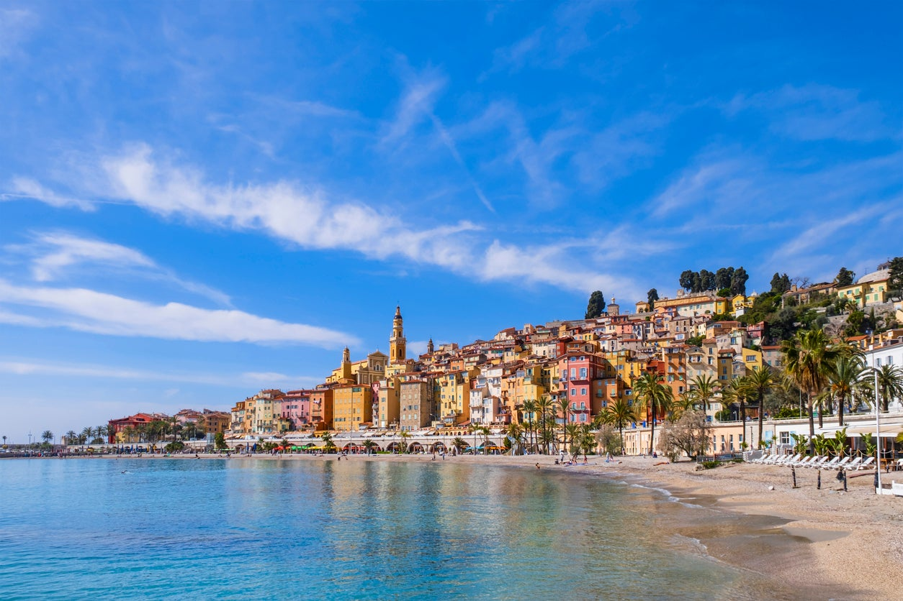
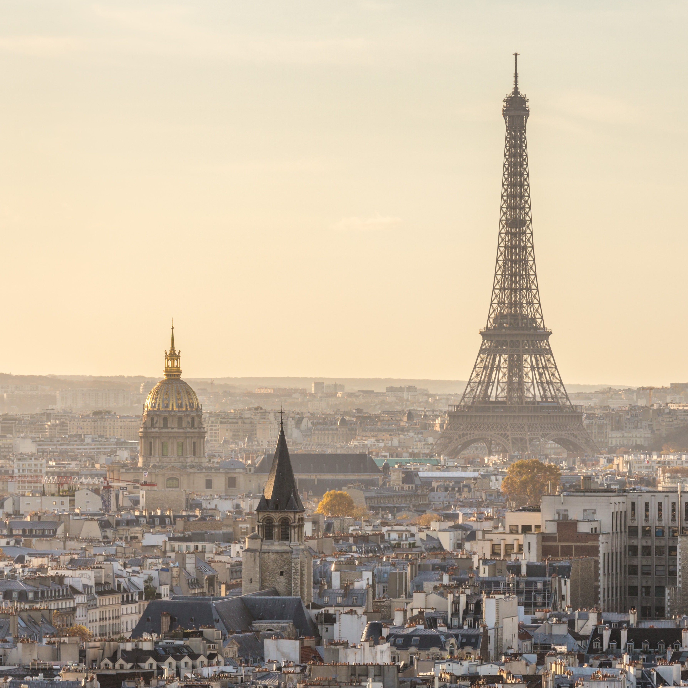
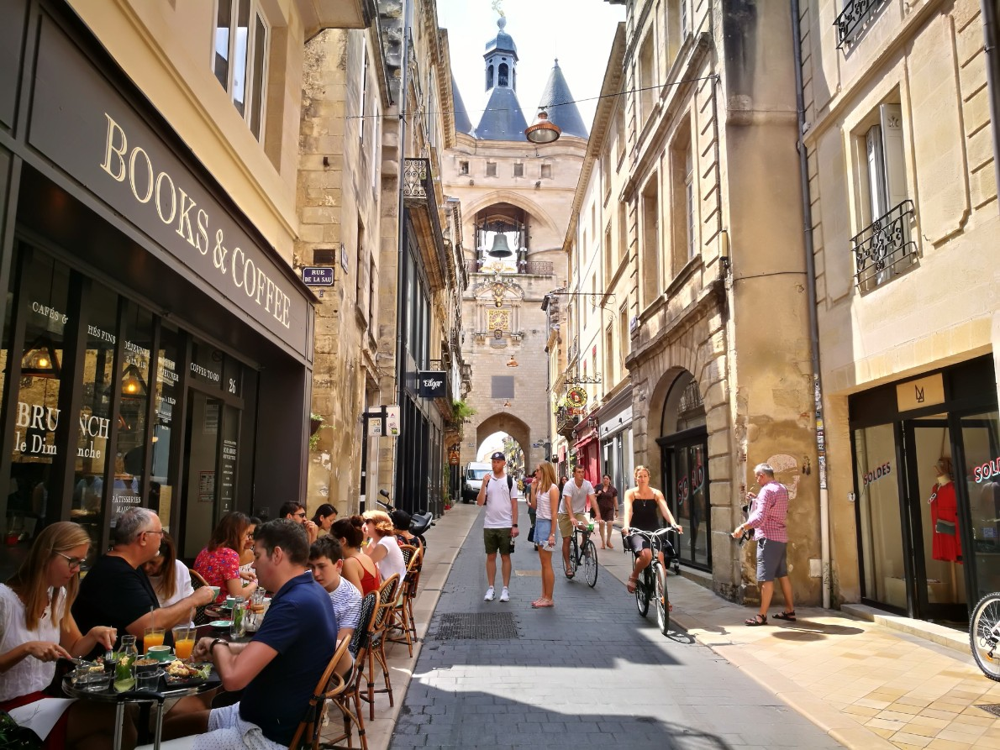
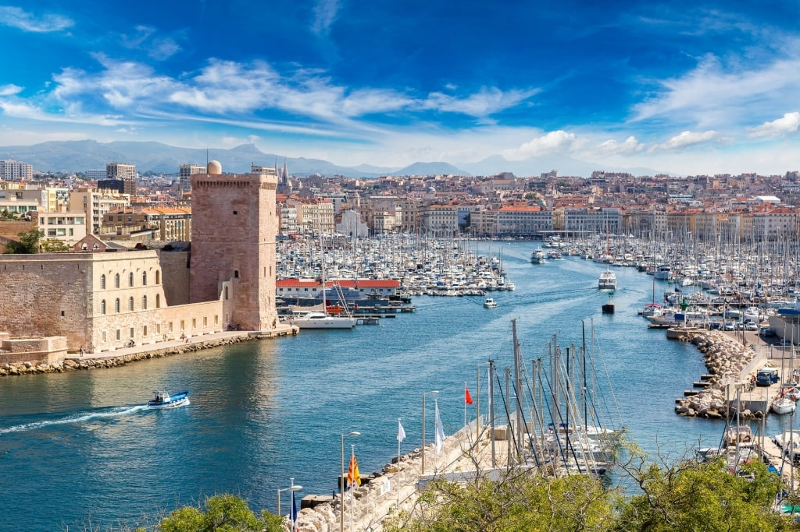
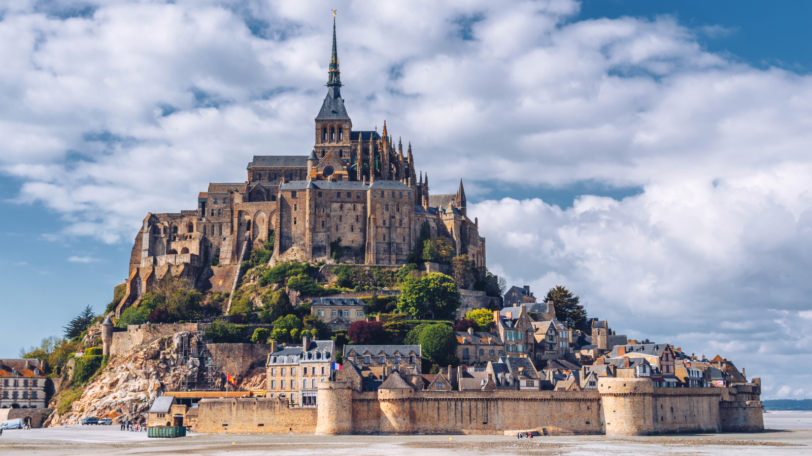

France, in Western Europe, encompasses medieval cities, alpine villages and Mediterranean beaches. Paris, its capital, is famed for its fashion houses, classical art museums including the Louvre and monuments like the Eiffel Tower. The country is also renowned for its wines and sophisticated cuisine. Lascaux’s ancient cave drawings, Lyon’s Roman theater and the vast Palace of Versailles attest to its rich history.
French culture is derived from an ancient civilization composed of a complex mix of Celtic, Greco-Roman, and Germanic elements. Monuments, especially from the period of Roman occupation, are numerous and include the amphitheatre at Arles, the arènes (“arenas”) in Paris, and the aqueduct at Pont du Gard.
France, in Western Europe, encompasses medieval cities, alpine villages and Mediterranean beaches. Paris, its capital, is famed for its fashion houses, classical art museums including the Louvre and monuments like the Eiffel Tower. The country is also renowned for its wines and sophisticated cuisine. Lascaux’s ancient cave drawings, Lyon’s Roman theater and the vast Palace of Versailles attest to its rich history.
France attracts thousands of visitors with it's astonishing arts and places. Some of are -
Paris, France's capital, is a major European city and a global center for art, fashion, gastronomy and culture. Its 19th-century cityscape is crisscrossed by wide boulevards and the River Seine. Beyond such landmarks as the Eiffel Tower and the 12th-century, Gothic Notre-Dame cathedral, the city is known for its cafe culture and designer boutiques along the Rue du Faubourg Saint-Honoré.
Bordeaux, hub of the famed wine-growing region, is a port city on the Garonne River in southwestern France. It’s known for its Gothic Cathédrale Saint-André, 18th- to 19th-century mansions and notable art museums such as the Musée des Beaux-Arts de Bordeaux. Public gardens line the curving river quays. The grand Place de la Bourse, centered on the Three Graces fountain, overlooks the Miroir d’Eau reflecting pool.
Provence, a region in southeastern France bordering Italy and the Mediterranean Sea, is known for its diverse landscapes, from the Southern Alps and Camargue plains to rolling vineyards, olive groves, pine forests and lavender fields. To the south is the Côte d'Azur (or French Riviera), where the elegant city of Nice and glamorous resort towns such as Saint-Tropez and Cannes line the coast.
Mont-Saint-Michel is a tidal island and mainland commune in Normandy, France. The island lies approximately one kilometre off France's north-western coast, at the mouth of the Couesnon River near Avranches and is 7 hectares in area.
A UNESCO World Heritage Site, Lyon has 2,000 years of history imprinted on its streets (yes, the cobblestone kind). Explore this history in Vieux Lyon (one of Europe's most extensive Renaissance neighbourhoods) and Lyon's two Roman amphitheatres, which still stage rock concerts today. It's no wonder Lyon is a popular area for travellers, with its dynamic university, first-class shopping, antique markets, vibrant theatre and music festivals, and a range of interesting museums, such as the International Puppet Museum and the Museum of Miniatures and Film Sets.